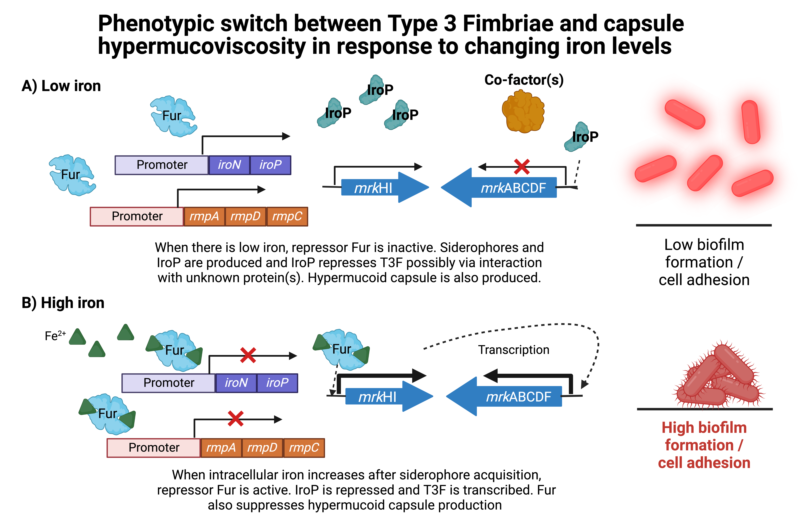
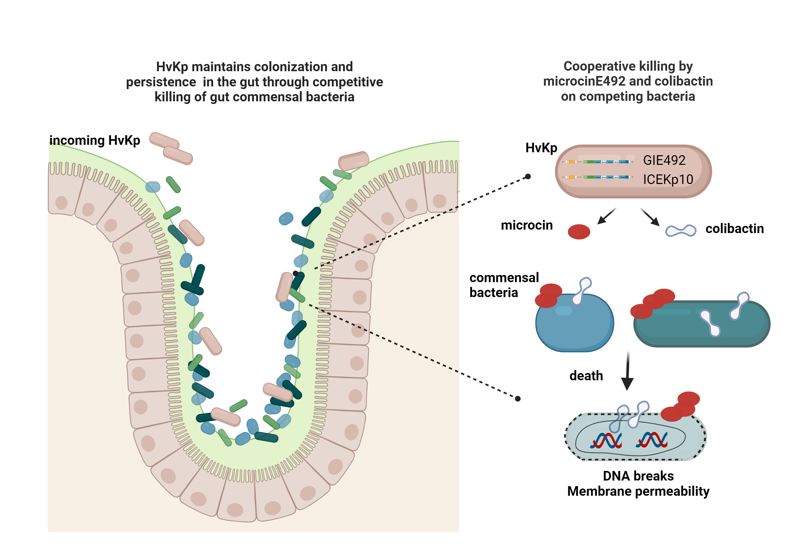
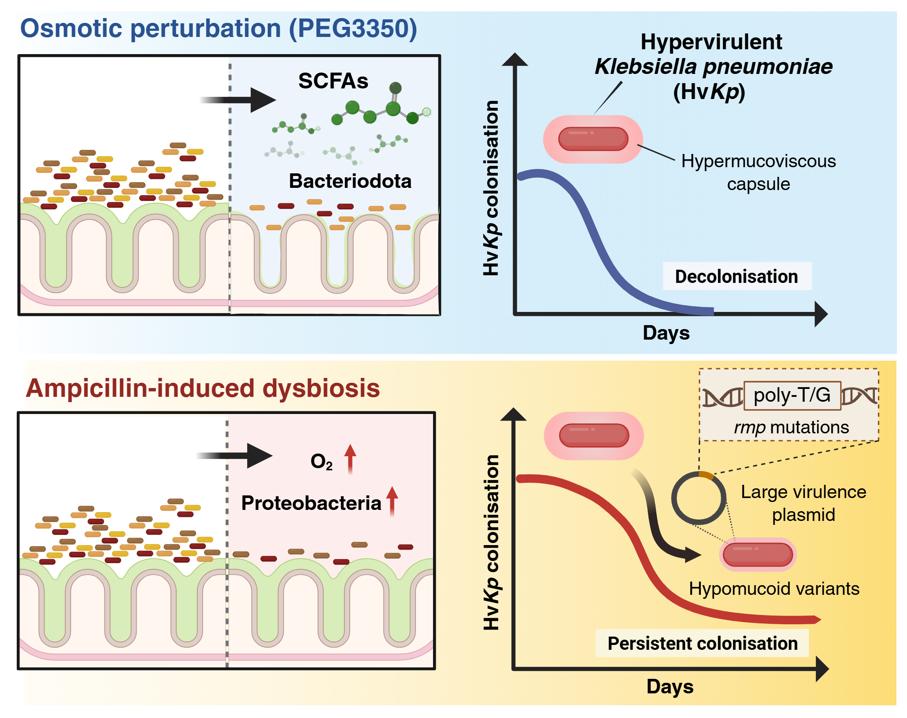
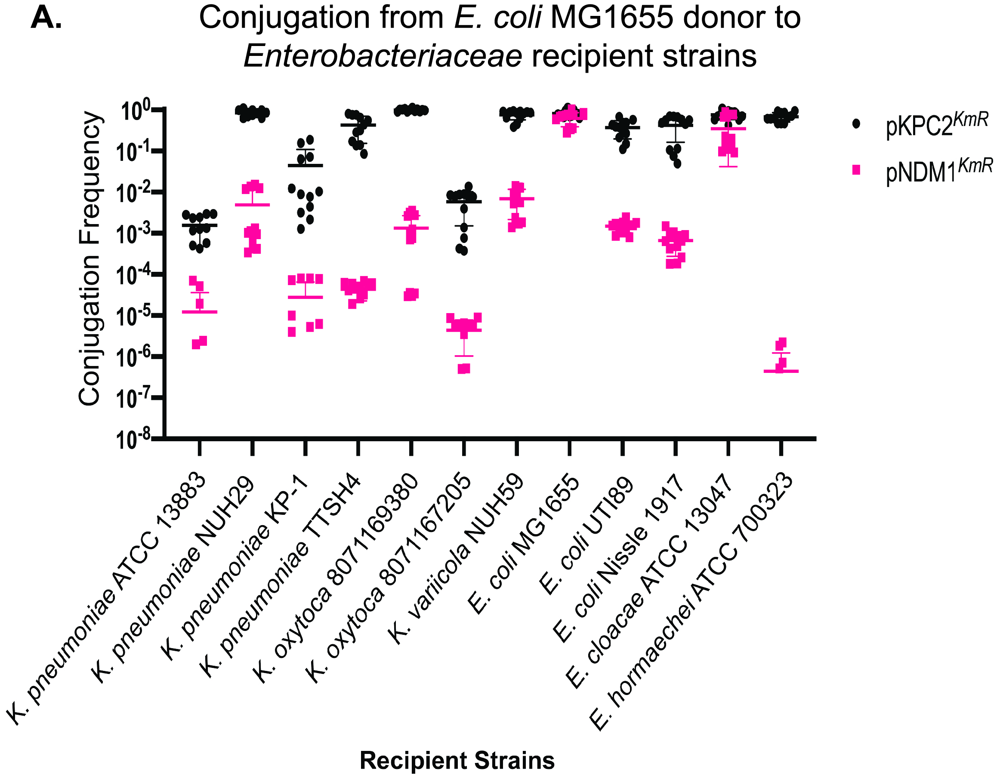
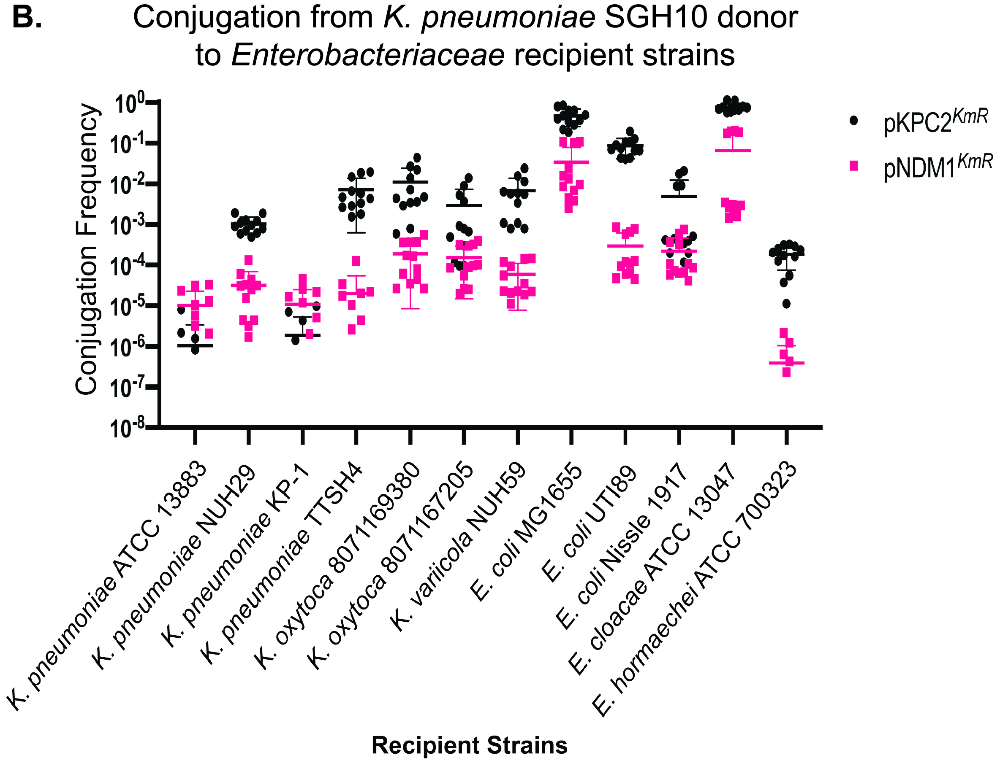
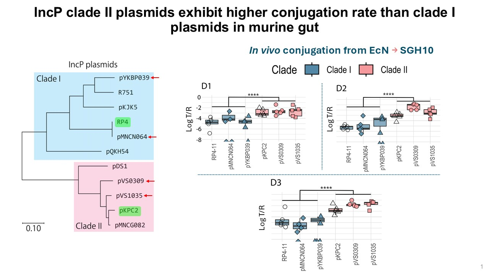

Our research
Understanding bacterial virulence, host–pathogen interactions and antimicrobial resistance.
Bacterial communities interact with one another in microbiomes present in the environment or niches like the mammalian gut. In the gut, these communities also interfaced with the mammalian host. We are interested to study how the ecology and interactions differ in health and disease.
Klebsiella pneumoniae
Klebsiella-induced liver abscess (KLA)
Klebsiella-induced liver abscess is a major cause of monomicrobial liver abscess and associated complications in many parts of Asia, including Singapore. We study the bacterial determinants and host immune responses involved when hypervirulent K. pneumoniae encounters its mammalian host. Infection is thought to frequently begin with intestinal colonisation, followed by movement across the intestinal barrier and dissemination through the hepatic portal vein to the liver.
Our research investigates bacterial and host factors at different stages of infection, including initial colonisation. We use SGH10, a reference hypervirulent strain isolated from a liver abscess patient, together with mouse colonisation and infection models and primary human intestinal organoids to understand how a gut coloniser becomes an invasive pathogen. We also examine the contributions of the K1 hypermucoid capsule, iron-acquisition siderophores, colibactin and microcin loci.



Klebsiella pneumoniae gut colonization and evolutionary fates under different dysbioses
We found that transient exposure to ampicillin results in restructuring of microbiota to favour oxygen-tolerant bacteria whereas osmotic laxative perturbation preserves Bacteriodota. Ampicillin- but not laxative-exposed environment favours establishment of rmpA phase variants that lost hypermucoviscosity but short-chain fatty acids present in the laxative-exposed gut constrains the establishment of these phase variants. Thus antibiotic exposure could shape the persistence of K. pneumoniae in the gut. There seems to be a trade-off between persistence versus virulence.
For recent findings, see Different gut microbiome dysbioses impact the evolutionary fate of hypervirulent Klebsiella pneumoniae (PubMed).

Antimicrobial resistance plasmid transmission
We investigate the factors that drive the spread of carbapenem-resistance and multidrug-resistance plasmids in hospitals. Through multicentre collaborations, we track changes in dominant plasmids and resistance genes over time, then use molecular genetic approaches to investigate plasmid and bacterial-host properties that favour transmission and stable carriage. A particular focus is the emergence of hypervirulent, carbapenem-resistant K. pneumoniae and the conditions enabling this convergence.


IncP plasmids can be divided into clade I versus clade II. We found that clade II plasmids are able to be transmitted at higher frequency in the mammalian gut and under anaerobic conditions, even when Klebsiella pneumoniae are expressing capsule.

Research figures are hosted directly on GitHub. The previously removed carbapenem-resistance strategies writeup and figures 5–8 remain excluded.